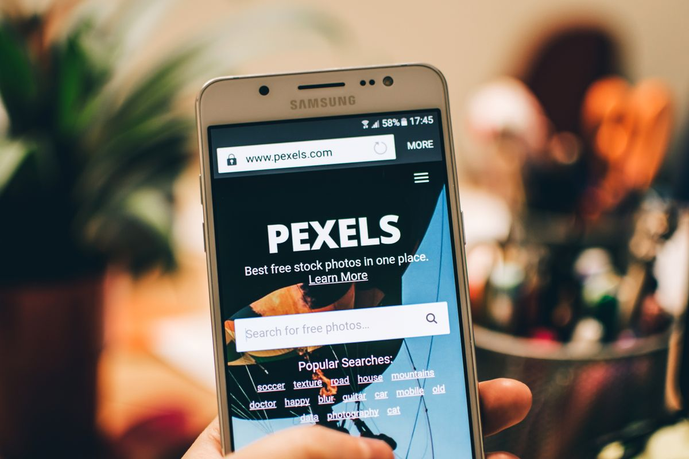

Setiap nonton iklan di YouTube, kamu pasti pernah dengar VPN berbayar yang ditawarkan dengan langganan bulanan. Lama-lama muncul anggapan di kepala: kalau mau browsing aman, ya harus bayar. Padahal ada dua browser populer yang menyertakan VPN gratis langsung di dalamnya, tanpa perlu install aplikasi tambahan dan tanpa langganan. Yang satu bahkan tanpa batas kuota dan tanpa akun. Per Oktober 2026, begini faktanya.
Kenapa VPN selalu terkesan mahal
Citra VPN yang mahal terbentuk dari iklan layanan VPN komersial yang memang dijual sebagai langganan. Fitur yang dijanjikan: enkripsi koneksi, menyembunyikan alamat IP, dan melindungi data saat memakai WiFi publik di kafe atau kampus. Semua itu memang benar adanya, tapi tidak semuanya harus dibayar. Opera dan Microsoft Edge menyematkan fitur serupa langsung di browsernya, gratis dan resmi. Bedanya cuma satu: VPN bawaan browser hanya melindungi traffic di dalam browser itu sendiri, bukan seluruh perangkat. Untuk kebutuhan browsing harian, itu sudah lebih dari cukup.
Bayangkan situasi yang paling sering dialami: kamu duduk di kafe sambil kerja pakai WiFi gratisnya, atau menunggu pesawat di bandara sambil membuka email dan media sosial. Di jaringan terbuka seperti itu, koneksimu rentan dibaca orang lain yang tersambung ke jaringan yang sama. Risiko inilah yang sering dipakai iklan VPN berbayar untuk menekan kamu agar membeli. Padahal untuk aktivitas browsing biasa di tempat-tempat itu, VPN bawaan browser sudah menutup celah terbesarnya tanpa biaya apa pun.
Opera: VPN gratis tanpa batas, tanpa akun, sejak 2016
Ini yang paling mengejutkan. Opera sudah punya VPN bawaan gratis sejak 2016, dan sampai sekarang tetap gratis. Tidak ada batas bandwidth, tidak ada batas kuota data, tidak ada iklan, dan kamu tidak perlu membuat akun sama sekali. Enkripsinya AES-256, standar industri yang sama dipakai layanan berbayar. Kebijakan no-log miliknya juga sudah diaudit independen oleh Deloitte pada 2024, dan kode keamanannya pernah diuji Cure53 pada 2022.
Opera sendiri menjelaskan VPN gratisnya didanai dari kemitraan pencarian, bukan dari memonetisasi data penggunanya. Sejak September 2026, VPN Opera di desktop bahkan bisa menyala otomatis setiap kamu tersambung ke WiFi publik, meski fitur ini awalnya digulirkan untuk pengguna di AS dan Prancis. Versi berbayarnya ada, namanya VPN Pro, tapi itu untuk perlindungan seluruh perangkat sampai enam perangkat sekaligus. Kalau kamu cuma butuh aman saat browsing, versi gratisnya sudah mencakup semuanya.
Cara menyalakan VPN gratis di Opera
- Buka Opera di laptop atau HP kamu.
- Masuk ke Settings, lalu pilih Features, lalu aktifkan VPN.
- Lencana biru akan muncul di samping address bar sebagai tanda VPN aktif.
- Untuk auto-connect di WiFi publik: Settings > VPN, lalu aktifkan "Always use VPN on Public WiFi".

Microsoft Edge: 5 GB gratis setiap bulan
Microsoft Edge punya fitur bernama Secure Network, yaitu VPN bawaan yang ditenagai Cloudflare. Setiap bulan kamu dapat jatah 5 GB data gratis, asalkan login dengan akun Microsoft personal. Fitur ini hanya melindungi traffic di dalam browser Edge, sama seperti Opera.
Edge menyediakan beberapa pilihan mode. Mode Optimized, mode defaultnya, hanya melewatkan traffic yang tidak aman lewat VPN, misalnya saat kamu tersambung ke WiFi publik atau membuka situs tanpa sertifikat valid. Situs streaming seperti Netflix sengaja tidak dilewatkan VPN supaya jatah 5 GB-mu tidak habis sia-sia, kecuali kamu memilih mode All Sites yang memaksa semua situs lewat VPN. Syaratnya: kamu harus login akun Microsoft di Edge, dan fitur ini tidak tersedia untuk perangkat yang dikelola perusahaan serta wilayah tertentu.
Cara menyalakan Secure Network di Edge
- Buka Microsoft Edge dan pastikan kamu sudah login dengan akun Microsoft personal.
- Masuk ke Settings > Privacy, search, and services.
- Aktifkan toggle "Use Microsoft Edge Secure Network".
- Pilih mode "Optimized" untuk pemakaian hemat, atau "All Sites" kalau mau semua situs lewat VPN.
Batasan jujur yang wajib kamu tahu
Supaya tidak kecewa, pahami batasannya sejak awal. Pertama, VPN bawaan browser hanya melindungi aktivitas di browser itu. Aplikasi lain di laptop atau HP kamu, misalnya aplikasi email atau update sistem, tidak ikut terenkripsi. Kedua, jatah Edge hanya 5 GB per bulan, jadi jangan dipakai buat download besar atau streaming maraton kalau mau awet. Ketiga, kalau kamu butuh perlindungan seluruh perangkat atau butuh memilih negara server tertentu, barulah VPN berbayar jadi masuk akal. Opera pun menjual VPN Pro untuk kebutuhan itu.
Tapi untuk skenario paling umum, yaitu buka WiFi publik di kafe, kampus, atau bandara sambil browsing, VPN gratis bawaan ini sudah menyelesaikan masalahnya tanpa keluar uang sepeser pun. Kamu tidak perlu install aplikasi asing, tidak perlu daftar akun baru, dan tidak perlu memasukkan kartu kredit untuk trial yang lupa dibatalkan.
Sumber dan Info Resmi
Fakta dan detail di artikel ini merujuk ke sumber berikut, yang sudah diverifikasi isinya:
- Opera: Free VPN: VPN gratis tanpa batas bandwidth, batas kuota, dan iklan; tanpa akun; enkripsi AES-256; didanai kemitraan pencarian; audit Deloitte dan Cure53; VPN Pro untuk perlindungan seluruh perangkat sampai enam perangkat.
- Opera News, 24 September 2026: Opera free VPN can now automatically protect you on public Wi-Fi networks: VPN gratis sejak 2016; auto-connect di WiFi publik untuk Opera desktop lewat Settings > VPN > "Always use VPN on Public WiFi"; awalnya digulirkan di AS dan Prancis; audit no-log Deloitte 2024 dan pengujian Cure53 2022.
- Opera Security: Why browsing with Opera’s VPN is safer: tidak perlu akun; AES-256; no-log diaudit Deloitte; VPN gratis hanya melindungi traffic di browser Opera, bukan seluruh perangkat; cara mengaktifkan lewat Settings > Features > VPN dengan lencana biru di address bar.
- Microsoft Support: Use the Microsoft Edge Secure Network to protect your browsing: Secure Network 5 GB gratis per bulan dengan akun Microsoft personal; mode Optimized dan All Sites; situs streaming dikecualikan secara default; tidak tersedia untuk perangkat managed dan wilayah tertentu; ditenagai Cloudflare.
- Pureinfotech: panduan Microsoft Edge Secure Network: Secure Network ditenagai Cloudflare; wajib login akun Microsoft; pengaturan via Settings > Privacy, search, and services.
- Thurrott: Opera’s free VPN is now automatic on public Wi-Fi networks: koroborasi perbandingan (Edge dibatasi 5 GB per bulan; Chrome dan Safari tidak punya VPN bawaan).